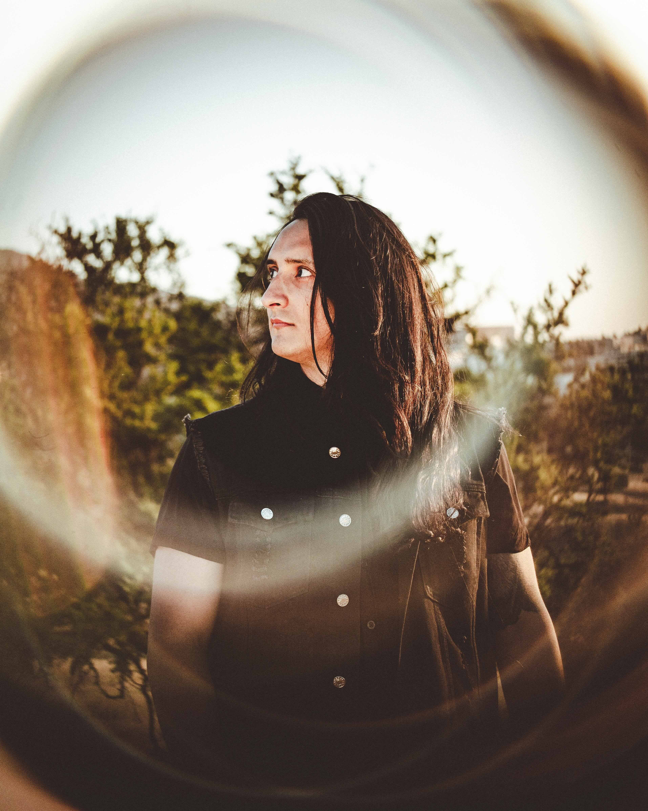
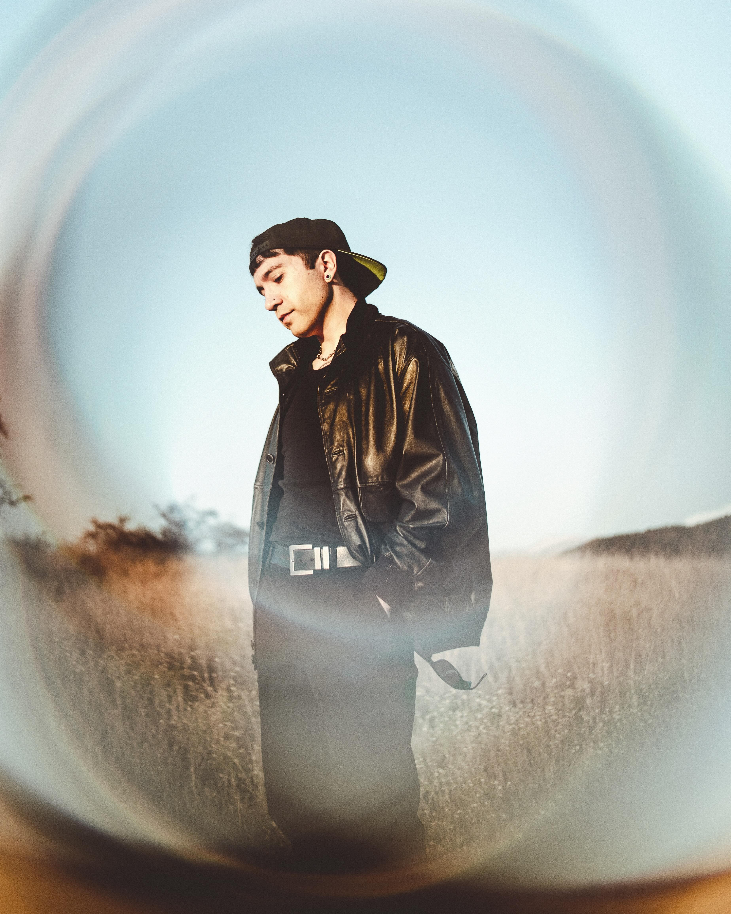
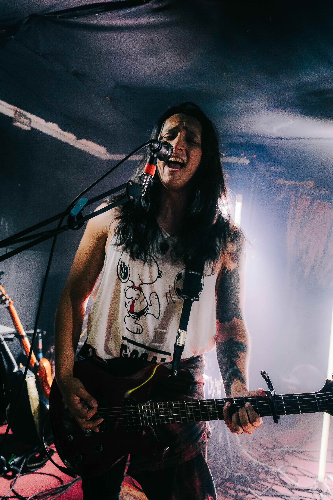
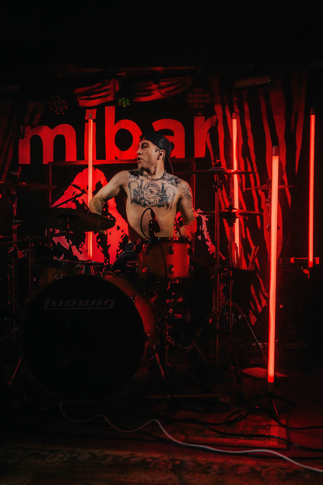
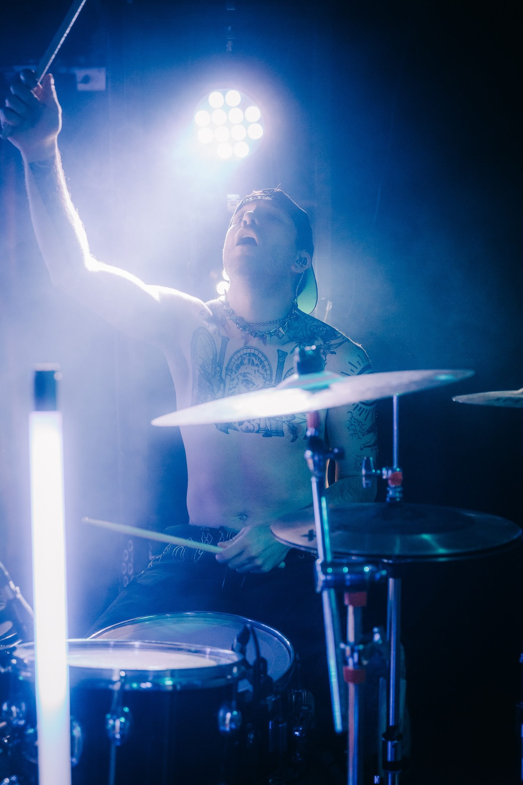
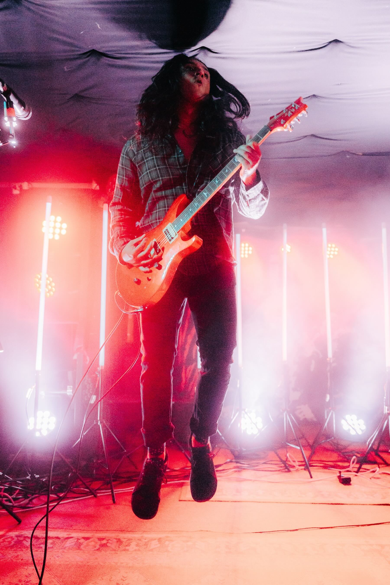
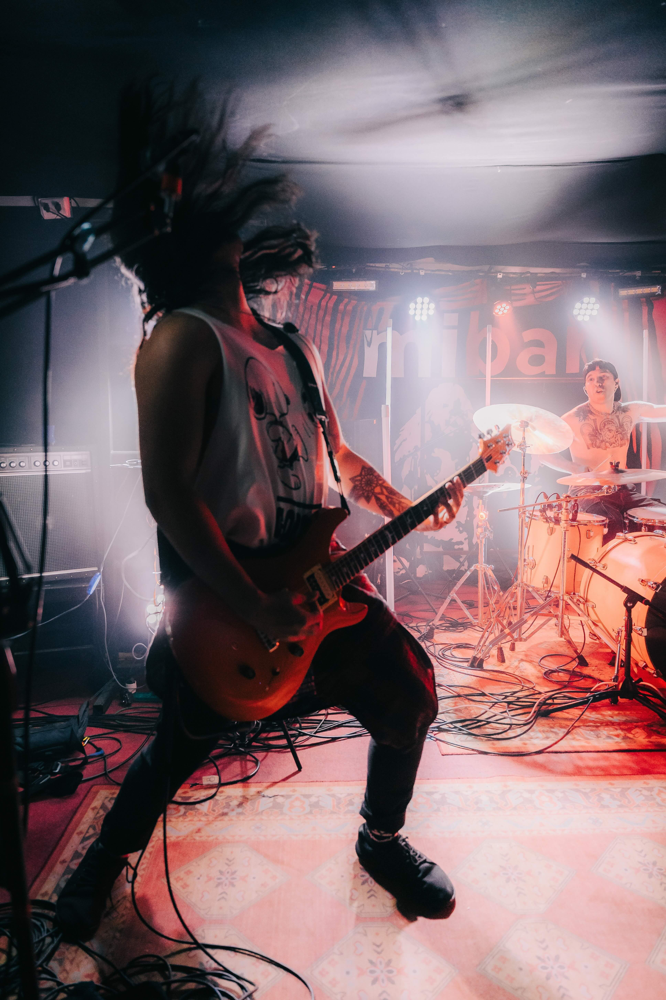
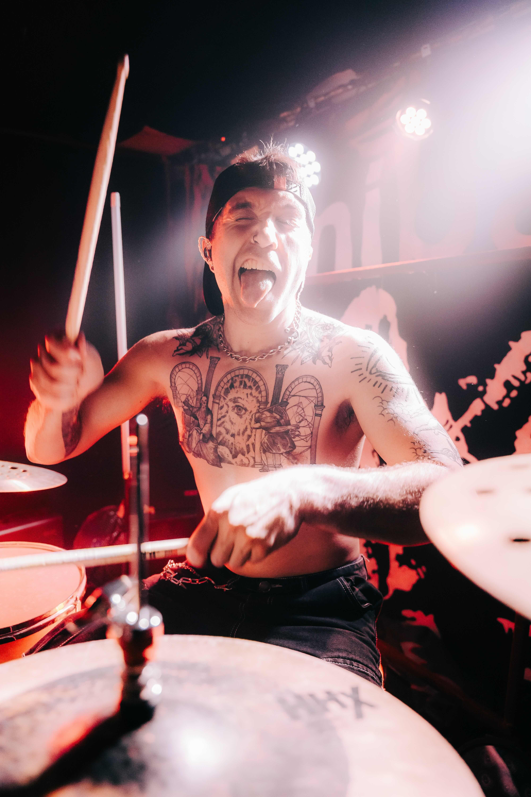

The story of ØCEANÍA — where they come from, where they are, and where they're going.
Members

Cris Labbé
Vocals / Guitar
Songwriter, vocalist, guitarist. The creative anchor of ØCEANÍA since its first days — the one who kept the band moving when everything else paused.

Jadiel Lutto
Drums
Friends with Cris since 2014. Stepped away, came back, and completed the seal. The heartbeat of the live show.
The Story So Far
ØCEANÍA was never just a band. It was always a circle of friends finding their way back to each other.
Cris Labbé and Jadiel Lutto have been friends since 2014, bound together by a shared obsession with music. Their early years were spent playing covers — Yellowcard, All Time Low, Blink-182 — learning what it meant to play together, to listen, to trust.
By 2017, Cris wanted to record a demo of an early song, Ayer. Jadiel stepped in to engineer the session and recorded the drums on the spot, learning the song in real time. That same year, long-time friend Fer Velasco — met at a jam session in 2016 — joined on bass. The three began writing together in earnest: D.F., Imperios, Constelación, Cuervos. A sound was taking shape — progressive, searching, unafraid.
When Jadiel stepped away in 2018, Rai Pinto filled the drum chair, and the band pushed further — into nu-metal, into darkness, into something heavier and more alternative. They played their first gigs. They found out what an ØCEANÍA live show could be: charisma, energy, adrenaline, and a connection with the audience that felt almost inexplicable.
They released the EP Inmersión, containing D.F. and Constelación. Then came Cuervos — and their first international appearance, a livestream for the Mexican festival El Rock es Cultura.
The pandemic paused everything. Fer and Rai pursued their own projects — Vestya and Matar a Grax / Yaman Sapodrido respectively — while Cris kept the band moving. Ayer was finally released in 2021.
By 2023, the world reopened. Manu Guzmán joined for a season — guitar and backing vocals — before leaving for Australia. And then Jadiel came back. The circle was complete.
Fer, Rai, Manu — they are not former members. They are the Cøntinent. They shaped this sound. They are family.
Press Photos






For hi-res files, contact press@oceania.com
Contact
Booking, press, collabs, or just want to say something — we read everything.
Get in touch →{kind=link}
{kind=link}
{kind=link}
{kind=link}
{kind=link}
{kind=link}